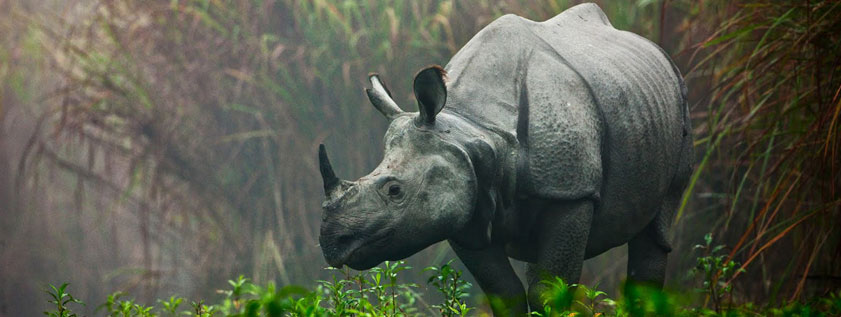

Kaziranga Safari Zones
Kaziranga National Park is divided into four main tourism ranges — Central, Western, Eastern and Burapahar. Each range has its own landscape, wildlife habitat and safari experience. Jeep safaris are available across all four main ranges, while elephant safari operations are traditionally associated with the Central and Western ranges. Assam Tourism advises visitors to reserve elephant safari seats in advance because availability is limited.

Which Kaziranga Safari Zone Should You Choose?
| Safari Range | Entry Point | Main Highlights | Safari Type |
|---|---|---|---|
| Central Range | Kohora / Mihimukh | Rhinos, elephants, grasslands, varied wildlife | Jeep + Elephant |
| Western Range | Bagori | Rhinos, grasslands, elephants, photography | Jeep + Elephant |
| Eastern Range | Agaratoli | Birds, wetlands, rhinos, elephants | Jeep |
| Burapahar Range | Ghorakati | Forests, hills, birds, Hoolock Gibbons | Jeep |
1. Central Range – Kohora / Mihimukh
The Central Range of Kaziranga National Park, commonly known as the Kohora Range, is one of the most popular safari areas in the park. The main tourism entry is through Kohora with elephant safari operations associated with Mihimukh.This range offers a beautiful combination of tall elephant grass, open grasslands, wetlands and forest patches. The landscape provides excellent habitat for the Greater One-Horned Rhinoceros, Asian Elephant, Wild Water Buffalo, Swamp Deer and Hog Deer. Visitors may also encounter wild boar, sambar, various species of monkeys and numerous birds.The Central Range is a popular choice for first-time visitors because it provides a classic Kaziranga landscape and a good variety of wildlife. Jeep safaris are available and elephant safari is also offered in this range according to the prevailing tourism arrangements. Assam Tourism specifically lists Mihimukh in the Central Range as an elephant safari point.
2. Western Range – Bagori
The Western Range of Kaziranga National Park, also known as the Bagori Range, is another highly popular area for wildlife safaris. It is known for its open grasslands, wetlands and forest patches and is particularly popular among visitors interested in seeing the Greater One-Horned Rhinoceros.The open nature of many parts of this range can make wildlife easier to observe, although sightings always depend on natural animal movement and weather conditions. Besides rhinos, visitors may see Asian Elephants, Wild Water Buffaloes, Swamp Deer, Hog Deer, wild boar and many species of birds.Both Jeep Safari and Elephant Safari are associated with the Western Range. Assam Tourism identifies Bagori as an elephant safari point and lists the Western Range among the principal jeep safari areas. The range is a good option for families and photographers who want to experience the open grasslands and famous wildlife of Kaziranga.
3. Eastern Range – Agaratoli
The Eastern Range of Kaziranga, also called the Agaratoli Range, is especially attractive for wildlife enthusiasts and bird watchers. It is known for its wetlands, grasslands and woodland areas and offers a different experience from the more frequently visited Central and Western ranges.The Eastern Range is an excellent place to explore the birdlife of Kaziranga. The park's wetlands and water bodies attract numerous resident and migratory birds.Depending on the season, visitors may observe ducks, geese, storks, herons, egrets, kingfishers and other waterbirds.Wildlife sightings are also possible during the jeep safari. Visitors may encounter rhinos, elephants, wild buffaloes, deer and other animals while travelling through the forest and grassland routes.The Agaratoli Range is accessible by Jeep Safari. Assam Tourism's official information specifically notes that jeep safaris are available in the Eastern Range from Agaratoli.
4. Burapahar Range – Ghorakati
The Burapahar Range offers a different type of Kaziranga safari experience. Located towards the western side of the park, this area has a more varied landscape with forested areas, grasslands, hills and rocky terrain.The range is particularly interesting for visitors who want to explore beyond the typical open grassland scenery of Kaziranga. Its forested habitat supports a variety of wildlife and birds. The area is also known for opportunities to observe Hoolock Gibbons, India's only ape species, along with other forest wildlife.A Jeep Safari through Burapahar provides an opportunity to enjoy the natural scenery at a slower pace while looking for animals and birds. Assam Tourism also highlights the Burapahar area for jeep safari experiences and notes its potential for Hoolock Gibbon sightings.
Important: Safari routes, timings, entry arrangements and availability can change according to forest department rules, weather, seasonal conditions and operational requirements. Wildlife sightings are natural and cannot be guaranteed. Visitors should follow the instructions of authorised guides and forest officials during their safari.